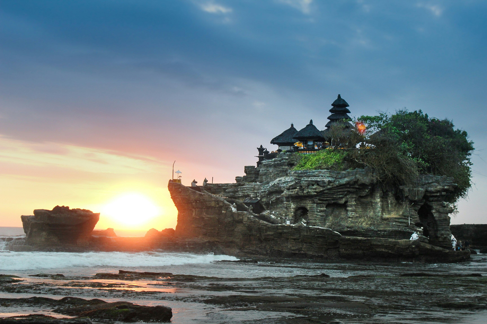

Ayam Betutu
Ayam berbumbu rempah yang dimasak perlahan hingga meresap dan kaya rasa.
Jelajahi keindahan alam, tempat ikonik, dan pesona wisata terbaik yang wajib kamu kunjungi saat berada di Bali.

Pantai paling terkenal di Bali untuk melihat matahari terbenam dan berselancar bagi pemula.

Ikon pariwisata Bali berupa pura karang di tengah laut yang menawarkan pemandangan spektakuler.

Pemandangan sawah berundak yang hijau dan asri, pusat seni dan ketenangan di Bali.

Pulau dengan tebing pantai yang dramatis, air laut jernih, dan panorama yang memukau.
Kenali rasa Bali lewat hidangan kaya rempah, sajian tradisional, dan racikan lokal yang khas.
Ayam berbumbu rempah yang dimasak perlahan hingga meresap dan kaya rasa.
Daging cincang berbumbu yang dililitkan pada batang serai atau bambu.
Nasi dengan lauk pilihan, lawar, suwiran ayam, dan sambal matah.
Campuran sayuran, kelapa, dan bumbu khas yang melengkapi sajian Bali.